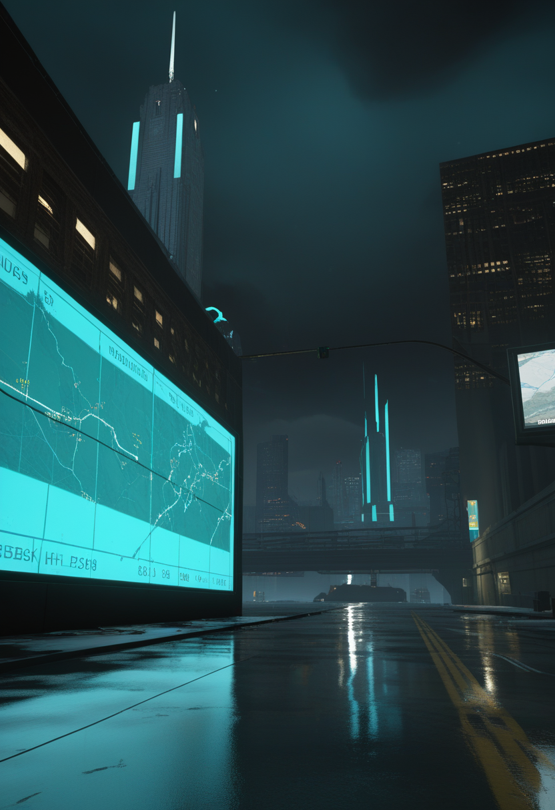
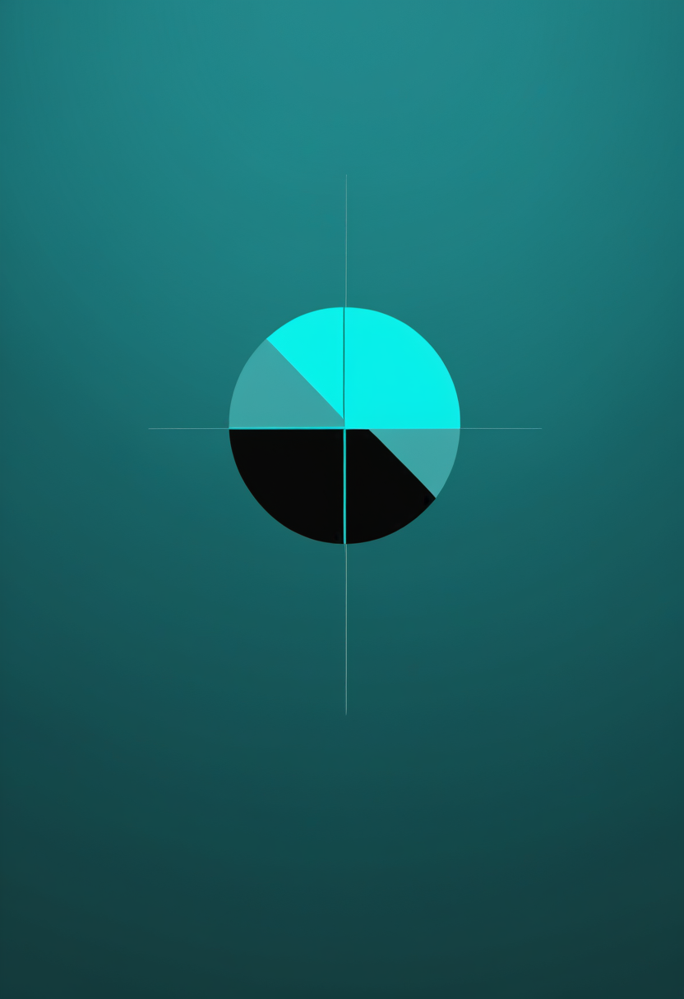
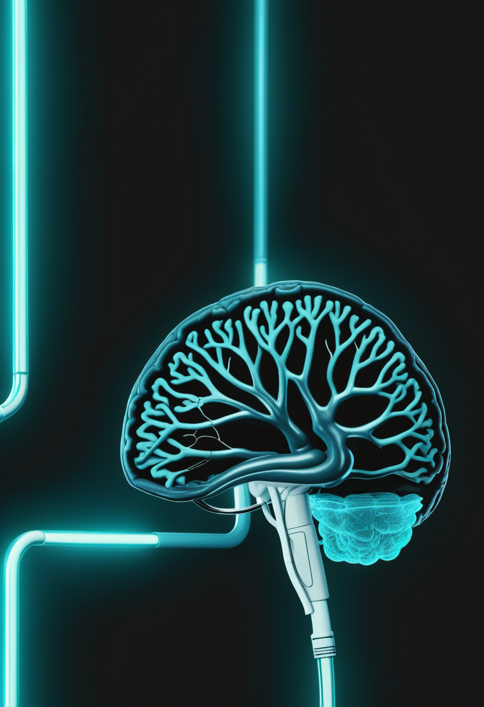
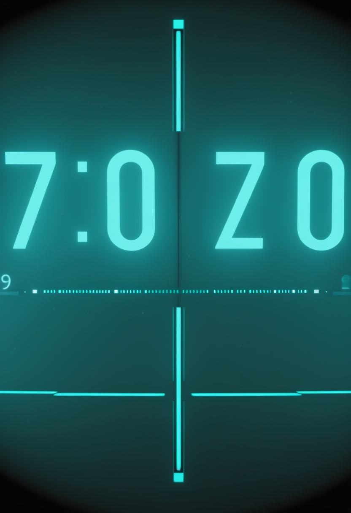
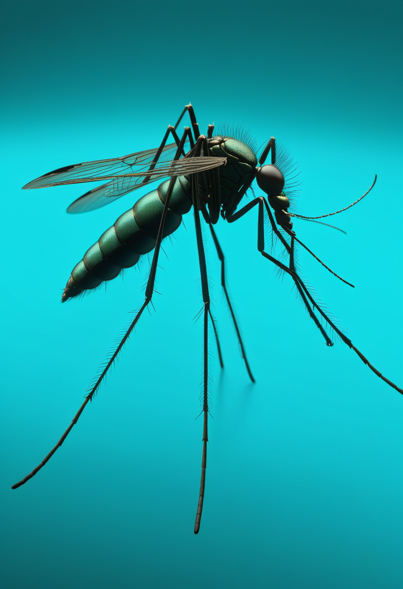

日曜日の便り。WHOはDRCのブンディブギョ型エボラについて7月15日時点で確定2,124例・死者828例に達したと明らかにし、前号(7/17号・2,011例・754例)から113例・74人の増加を確認した。加えてNPRは、WHOのモデル分析が実際の流行規模を公式報告の少なくとも2〜4倍と示唆していると報じ、史上3番目の規模という深刻さに新たな重みが加わった。対照的に隣国ウガンダでは、自国のエボラ流行(5/15宣言・確定20例)の最後の患者が7/16に退院し、終息宣言に向けた42日間のカウントダウンが本日3日目を迎えている。BCIの世界では中国Neuracleの商用BCI「NEO」が累計36件の移植を積み重ね、Synchronは2億ドルの調達を追い風に10例の留置実績とNVIDIA連携を進める。SMAの世界では、150年越しの悲願とも言える新生児スクリーニングがイングランドで全国展開へ動き出し、次世代遺伝子治療GB221の治験も静かに始動した。宇宙では球状星団オメガ・ケンタウリの奥に恒星質量ブラックホールが見つかり、CERNは半世紀前に予言された二重チャームバリオンをついに観測。人類史の分野では、脳を模す「デジタルツイン」がまた一歩個人差に踏み込み、78万年前の湖畔で暮らした人々が流木という身近な燃料を頼りに世代を超えて定住していた痕跡も明らかになった。

7/17号の続報 ― WHOは7月15日時点でDRCのブンディブギョ型エボラが確定2,124例・死者828例に達したと発表した。前号(7/13時点・2,011例・754例)から113例・74人の増加で、5月半ばの発生確認から2カ月余りなお拡大が続く。NPR(7/15付)はWHOのモデル分析を引用し、実際の流行規模が公式報告の少なくとも2〜4倍に達している可能性を指摘、新規感染の約8割が追跡不能な感染連鎖から生じているとした。一方、隣国ウガンダは自国のブンディブギョ型エボラ流行(5月15日宣言、確定20例・死者2例、6月21日以降新規感染ゼロ)の最後の患者を7月16日に退院させ、終息宣言に向けた42日間のカウントダウンを開始。本日で3日目、残り約39日となった。同一の病原体をめぐり、DRC本体の深刻化とウガンダの着実な封じ込めという明暗が一段と鮮明になっている。
英国政府は7月16日、SMA(脊髄性筋萎縮症)の新生児スクリーニングをイングランド全域で展開すると発表した。既に実施体制を持つ7施設が10月から先行開始し新生児の約72%をカバー、残る6施設も2027年10月までに追随し全国網羅を目指す2段階方式。今年3月にスクリーニングを導入したスコットランドに続く動きで、15万人超の署名を集めた請願と議会での討論を経て、当初計画より前倒しで実現した。早期発見・早期治療は運動機能・生存率の改善に直結するとされる。
米GEMMABioは、次世代SMA遺伝子治療候補「GB221」を検証する第1/2相「CHARISMA」試験で、第1号患者への投与を完了したと発表した。生後2週間から12カ月未満の乳児(有症状・無症状の両群)を対象に、脳脊髄液への直接注射という投与経路で安全性・忍容性・有効性を評価する。コドン最適化したSMN1遺伝子を独自のカセット構造に収め、既存の遺伝子治療で懸念される過剰発現毒性や感覚神経毒性の低減を狙う設計で、ペンシルベニア大学由来のCNSプラットフォーム技術とAAVhu68ベクターを用いる。

日本ではこども家庭庁がSCID(重症複合免疫不全症)とSMAを対象とする新生児スクリーニング実証事業を2023年度に開始しており、2026年5月時点で採択自治体が拡大しているとされる。ただし対象自治体数や公費負担の具体的な最新状況は本稿執筆時点で確認が取れておらず、正確な数値は学会・自治体発表を要確認としたい。イングランド・スコットランドの全国展開とは対照的に、日本はなお都道府県単位の実証段階にとどまる。
英国は請願と議会討論を追い風に全国展開を前倒しし、次世代遺伝子治療は乳児への初回投与という最初の一歩を踏み出した。一方、日本は自治体単位の実証にとどまり、「早期発見の入口」を巡る各国の歩幅の違いが改めて浮き彫りになっている。
中国Neuracle Medical Technologyの商用ブレイン・コンピューター・インターフェース「NEO」は、2026年3月13日にNMPA(中国国家薬品監督管理局)からクラスIII医療機器認証を世界で初めて取得して以来、7月時点で累計36件の移植手術を完了した。2023年の治験開始以来、全例で運動想起による手の把持動作支援とリハビリ訓練に成功しているという。

7/17号の続報 ― 血管内アプローチのBCI「Stentrode」を手がけるSynchronは、シリーズDで調達した2億ドルを土台に2026年中のピボタル試験開始を準備している。米国・豪州で既に麻痺患者10人へStentrodeを留置済みであることに加え、NVIDIAの医療AIプラットフォーム「Holoscan」との連携も進めていることが新たに判明した。ピボタル試験が成功すれば、永久埋め込み型BCIとして初の米FDA本承認(PMA)申請に道を開く。
中国発の量産先行と、米国発の資金・AI基盤の両輪が、それぞれ異なる速度で商用化に向かっている。埋め込み型BCIの競争軸は、もはや「治験に入れるか」ではなく「どれだけ実装数と事業基盤を積み上げられるか」に移りつつある。
7/17号の続報 ― WHOは7月15日時点でDRCのブンディブギョ型エボラが確定2,124例・死者828例に達したと発表した。前号(7/13時点・2,011例・754例)から113例・74人の増加。NPR(7/15付)はWHOのモデル分析を引用し、報告されていない感染連鎖を踏まえると実際の流行規模は公式報告の少なくとも2〜4倍に達している可能性があると報じた。新規感染の約8割が追跡不能な感染連鎖から生じており、史上3番目の規模の流行として対応能力を上回るペースが続いている。

ウガンダ保健省は7月16日、自国で確定していたブンディブギョ型エボラ流行(5月15日宣言、確定20例・死者2例)の最後の患者を退院させ、終息宣言に向けた42日間(潜伏期間の2倍)のカウントダウンを開始した。本日7月19日時点でカウントダウンは3日目、残り約39日。6月21日以降新規感染はゼロを維持しているが、DRC側からの越境流入があれば日数はゼロにリセットされる点が今後の焦点となる。

スリランカでは2026年のデング熱累計症例数が約72,430例・死者49例に達したと報じられている。東南アジア・南アジア地域では雨季に伴う媒介蚊の増加が例年の懸念材料となっており、今シーズンも大規模な流行が続いている。
DRC本体の数値は上方修正が続く一方、同じ病原体と向き合うウガンダは着実にゼロへのカウントダウンを刻んでいる。統計の裏に潜む脅威への警戒と、地道な封じ込めの成果が同じ週に並存している。
7月13日付でThe Astrophysical Journal Lettersに掲載された成果によると、NASA/ESAのハッブル宇宙望遠鏡の20年超に及ぶアーカイブデータとジェイムズウェッブ宇宙望遠鏡の観測を組み合わせ、球状星団オメガ・ケンタウリ内に恒星質量ブラックホール「oMEGACat BH-2」(質量は太陽の約4.46倍)を発見した。同星団には理論上約1万個の恒星質量ブラックホールが存在すると予測されており、今回はその最初の確認例。伴星との公転周期はブラックホール連星として史上最長という。
CERNのLHCb実験は、アップグレード後のLHC検出器で取得した2024年のデータを用い、半世紀以上前から理論的に予測されながら未発見だった二重チャームバリオン「Ωcc⁺」の観測を報告した。7月上旬のBeauty 2026会議で発表され、理論通りの構成をもつ二重チャームバリオンの粒子ファミリーが揃ったことになる。
銀河スケールの謎(隠れたブラックホール)と素粒子スケールの謎(半世紀越しの予測粒子)が、同じ週に別々の望遠鏡・検出器から解き明かされた。見えないものを見つけ出す営みは、規模を問わず着実に前進している。
2026年3月にbioRxivで公開されたプレプリントは、個人の脳画像・タスク時活動データを統合し、精神疾患横断的な病理を捉える皮質-皮質下ネットワークの個別特性を再現する「介入可能な脳デジタルツイン」を報告した。臨床応用にはなお検証が必要だが、個人差を反映した機能的シミュレーションという点で、これまでの一般モデルから一歩進んだ成果とされる。
イスラエル北部の遺跡ゲシェル・ベノット・ヤアコブで発見された炭化物の分析から、約78万年前の初期人類が湖岸に流れ着く流木を継続的な燃料源として利用し、魚の調理・大型動物の解体・道具作りなど日々の暮らしを炉端中心に組み立てていたことが明らかになった。特定の樹種を探し歩くのではなく、身近にある材料を実用的に活用していたとみられ、同じ場所に世代を超えて繰り返し戻ってきた理由の一端を説明しうるという。2026年6月、Quaternary Science Reviews誌に掲載。
脳を模すデジタルツインは個人差という新たな解像度を獲得し、78万年前の人類もまた身近な資源を実用的に活かす知恵を持っていた。「何が個をかたちづくるか」という同じ問いに、現代の技術と遠い過去の考古学がそれぞれの角度から迫っている。
2026年7月19日、DRCのエボラは確定2,124例・死者828例に達し、WHOは実態が公式値の2〜4倍に上りうると重ねて警告した。だが同じ病原体と向き合う隣国ウガンダでは、最後の患者が退院し終息への42日間のカウントダウンが3日目を刻んでいる。統計の裏に潜む脅威への警戒と、地道な封じ込めの積み重ねは、常に同じ現実の両面としてそこにある。イングランドは新生児スクリーニングの全国展開を前倒しし、次世代の遺伝子治療は乳児への最初の投与を終えた。宇宙では隠れていたブラックホールと半世紀越しの予言粒子がそれぞれの検出器に姿を現し、78万年前の人類は流木という身近な資源を頼りに世代を超えて湖畔に暮らしていた――見えない構造への理解は、危機への警戒と並んで、今週もまた静かに前進している。
では、また明日の朝に。 — JaH